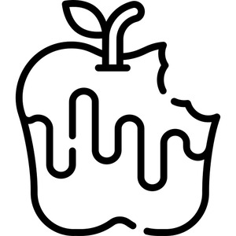

ⲕⲛⲟⲥ, ⲕⲛⲟⲟⲥ, ⲕⲛⲱⲱⲥ (BMar) S, ⲭⲱⲛⲥ B, ⲕⲟⲛⲥ† (R) S, ⲭⲟⲛⲥ† B vb I intr, stink, be putrid: Ex 8 10 B, Jo 11 39 B (SA2 ⲣ ⲥⲧⲟⲓ) ὄζειν, Ex 16 24 SB, C 89 53 B ἐπόζ., Ps 37 5 SB προσόζ.; BMar 197 S body ⲁϥⲕ., Mor 22 101 S flesh ϣⲁⲩⲕ. ⲛⲥⲉⲧⲁⲕⲟ = BSM 95 B ⲭ., C 41 24 B ⲉϥⲭ.† like ⲓⲁⲃⲓ of corpse, R 2 1 76 S superstitious parents wash children in ⲙⲙⲟⲟⲩ ⲉⲧⲕ.†, Bor 258 41 S paral ⲃⲁⲁⲃⲉ. II tr, make to stink, defile: Va 61 26 B why ⲕⲭ. ⲛⲛⲉⲕϫⲓϫ by carrying worm ? ἀφανίζειν. As nn m, stink: ShA 1 247 S ⲡⲁϣⲁⲓ ⲙⲡⲉⲩⲕ., Pcod 26 S (var) neither death nor ⲕ., Va 57 247 B ⲭ. & ⲥⲑⲟⲓ ⲃⲱⲛ of dirty cauldron.
(verb)
intr: stink, be putrid [οζειν]
tr: make to stink, defile
as noun m, stink
tr: make to stink, defile
as noun m, stink

1: stink, 2: be putrid, 3: defile
complete
112b
516b
ⲭⲱⲛⲥ B stink v ⲕⲛⲟⲥ.
See also:
| view | ϩⲟⲟⲩ S ϩⲁⲩ ALF ϩⲱⲟⲩ B ϩⲁⲟⲩ FO | (verb) intr (qual): be putrid, so bad, wicked [σαπρος, πονηρος ειναι, κακος]919 |
| view | (ⲣⲟⲕⲣⲉⲕ), ⲣⲉⲕⲣⲱⲕ† B | (verb) intr: become, be putrid or scorched (?)1322 |
| view | ϣⲛⲟϣ S ⳉⲛⲁϣ A ϣⲛⲁϣ L ϣⲟⲛϣ† S | (verb) intr: stink
as nn [βρομος]1942 |
| view | ⲗⲱⲙⲥ, ⲗⲁⲙⲉⲥ S ⲗⲟⲙⲥ† SB ⲗⲁⲙⲏⲥ† F | (verb) intr: (not bibl), be foul, stink988 |
| view | ⲙⲣⲟϣⲧ† B | (verb) intr: stink1103 |